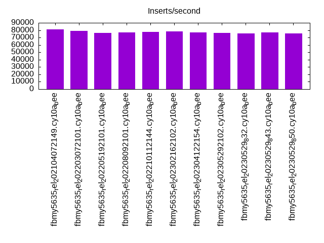
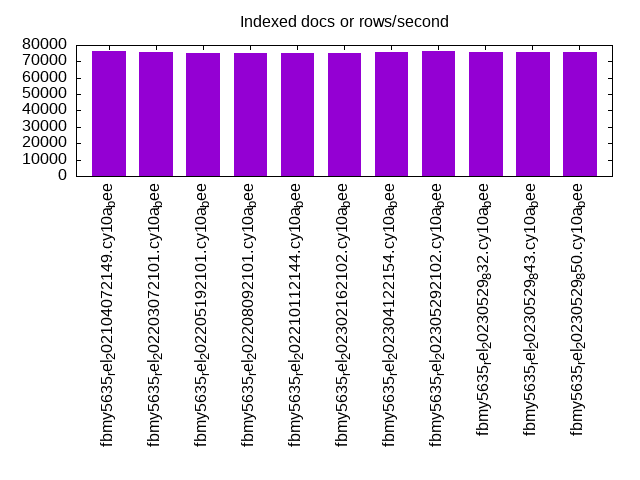
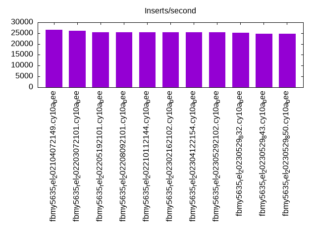
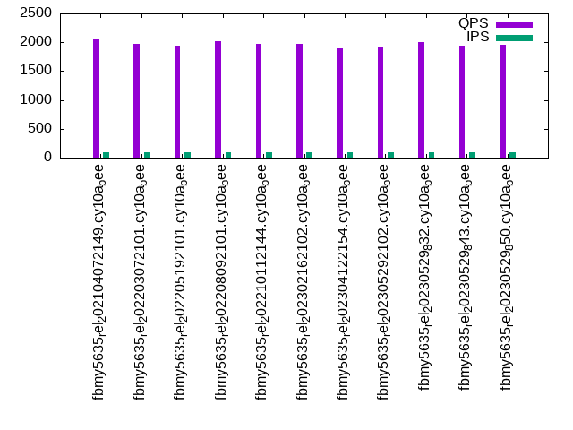
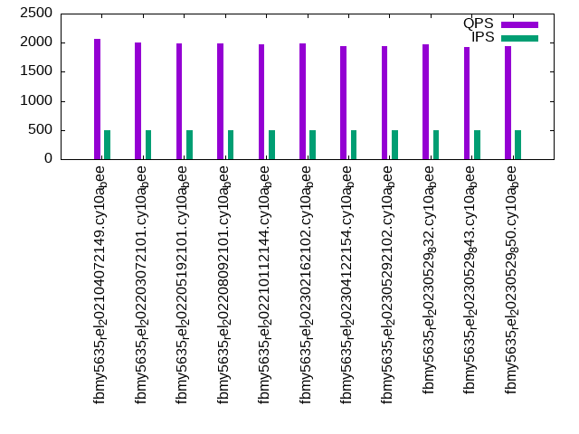
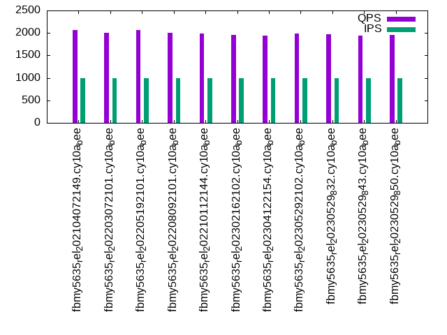

This is a report for the insert benchmark with 800M docs and 1 client(s). It is generated by scripts (bash, awk, sed) and Tufte might not be impressed. An overview of the insert benchmark is here and a short update is here. Below, by DBMS, I mean DBMS+version.config. An example is my8020.c10b40 where my means MySQL, 8020 is version 8.0.20 and c10b40 is the name for the configuration file.
The test server has 8 AMD cores, 16G RAM and an NVMe SSD. It is described here as the Beelink. The benchmark was run with 1 client and there were 1 or 3 connections per client (1 for queries or inserts without rate limits, 1+1 for rate limited inserts+deletes). It uses 1 table. It loads 800M rows per table without secondary indexes, creates secondary indexes, then inserts 100M rows per table with a delete per insert to avoid growing the table. It then does 3 read+write tests for 3600s each that do queries as fast as possible with 100, 500 and then 1000 inserts/second/client concurrent with the queries and 1000 deletes/second to avoid growing the table. The database is larger than RAM. Clients and the DBMS share one server. The per-database configs are in the per-database subdirectories here.
The tested DBMS are:
The numbers are inserts/s for l.i0 and l.i1, indexed docs (or rows) /s for l.x and queries/s for q*.2. The values are the average rate over the entire test for inserts (IPS) and queries (QPS). The range of values for IPS and QPS is split into 3 parts: bottom 25%, middle 50%, top 25%. Values in the bottom 25% have a red background, values in the top 25% have a green background and values in the middle have no color. A gray background is used for values that can be ignored because the DBMS did not sustain the target insert rate. Red backgrounds are not used when the minimum value is within 80% of the max value.
| dbms | l.i0 | l.x | l.i1 | q100.1 | q500.1 | q1000.1 |
|---|---|---|---|---|---|---|
| fbmy5635_rel_202104072149.cy10a_bee | 81350 | 76135 | 26490 | 2068 | 2071 | 2070 |
| fbmy5635_rel_202203072101.cy10a_bee | 78958 | 76004 | 26042 | 1969 | 2006 | 2004 |
| fbmy5635_rel_202205192101.cy10a_bee | 76198 | 75275 | 25374 | 1946 | 1987 | 2059 |
| fbmy5635_rel_202208092101.cy10a_bee | 76982 | 75417 | 25471 | 2023 | 1986 | 2007 |
| fbmy5635_rel_202210112144.cy10a_bee | 77504 | 74986 | 25452 | 1978 | 1965 | 1987 |
| fbmy5635_rel_202302162102.cy10a_bee | 78003 | 75410 | 25342 | 1970 | 1982 | 1955 |
| fbmy5635_rel_202304122154.cy10a_bee | 76864 | 75868 | 25413 | 1895 | 1934 | 1948 |
| fbmy5635_rel_202305292102.cy10a_bee | 76482 | 76280 | 25523 | 1925 | 1946 | 1986 |
| fbmy5635_rel_20230529_832.cy10a_bee | 75522 | 75925 | 25291 | 1996 | 1975 | 1965 |
| fbmy5635_rel_20230529_843.cy10a_bee | 76672 | 75846 | 24789 | 1939 | 1921 | 1940 |
| fbmy5635_rel_20230529_850.cy10a_bee | 75844 | 75695 | 24845 | 1951 | 1943 | 1962 |
This table has relative throughput, throughput for the DBMS relative to the DBMS in the first line, using the absolute throughput from the previous table. Values less than 0.95 have a yellow background. Values greater than 1.05 have a blue background.
| dbms | l.i0 | l.x | l.i1 | q100.1 | q500.1 | q1000.1 |
|---|---|---|---|---|---|---|
| fbmy5635_rel_202104072149.cy10a_bee | 1.00 | 1.00 | 1.00 | 1.00 | 1.00 | 1.00 |
| fbmy5635_rel_202203072101.cy10a_bee | 0.97 | 1.00 | 0.98 | 0.95 | 0.97 | 0.97 |
| fbmy5635_rel_202205192101.cy10a_bee | 0.94 | 0.99 | 0.96 | 0.94 | 0.96 | 0.99 |
| fbmy5635_rel_202208092101.cy10a_bee | 0.95 | 0.99 | 0.96 | 0.98 | 0.96 | 0.97 |
| fbmy5635_rel_202210112144.cy10a_bee | 0.95 | 0.98 | 0.96 | 0.96 | 0.95 | 0.96 |
| fbmy5635_rel_202302162102.cy10a_bee | 0.96 | 0.99 | 0.96 | 0.95 | 0.96 | 0.94 |
| fbmy5635_rel_202304122154.cy10a_bee | 0.94 | 1.00 | 0.96 | 0.92 | 0.93 | 0.94 |
| fbmy5635_rel_202305292102.cy10a_bee | 0.94 | 1.00 | 0.96 | 0.93 | 0.94 | 0.96 |
| fbmy5635_rel_20230529_832.cy10a_bee | 0.93 | 1.00 | 0.95 | 0.97 | 0.95 | 0.95 |
| fbmy5635_rel_20230529_843.cy10a_bee | 0.94 | 1.00 | 0.94 | 0.94 | 0.93 | 0.94 |
| fbmy5635_rel_20230529_850.cy10a_bee | 0.93 | 0.99 | 0.94 | 0.94 | 0.94 | 0.95 |
This lists the average rate of inserts/s for the tests that do inserts concurrent with queries. For such tests the query rate is listed in the table above. The read+write tests are setup so that the insert rate should match the target rate every second. Cells that are not at least 95% of the target have a red background to indicate a failure to satisfy the target.
| dbms | q100.1 | q500.1 | q1000.1 |
|---|---|---|---|
| fbmy5635_rel_202104072149.cy10a_bee | 100 | 499 | 998 |
| fbmy5635_rel_202203072101.cy10a_bee | 100 | 499 | 999 |
| fbmy5635_rel_202205192101.cy10a_bee | 100 | 499 | 998 |
| fbmy5635_rel_202208092101.cy10a_bee | 100 | 499 | 999 |
| fbmy5635_rel_202210112144.cy10a_bee | 100 | 499 | 999 |
| fbmy5635_rel_202302162102.cy10a_bee | 100 | 499 | 998 |
| fbmy5635_rel_202304122154.cy10a_bee | 100 | 499 | 999 |
| fbmy5635_rel_202305292102.cy10a_bee | 100 | 499 | 998 |
| fbmy5635_rel_20230529_832.cy10a_bee | 100 | 499 | 999 |
| fbmy5635_rel_20230529_843.cy10a_bee | 100 | 499 | 999 |
| fbmy5635_rel_20230529_850.cy10a_bee | 100 | 499 | 998 |
| target | 100 | 500 | 1000 |
l.i0: load without secondary indexes. Graphs for performance per 1-second interval are here.
Average throughput:
Insert response time histogram: each cell has the percentage of responses that take <= the time in the header and max is the max response time in seconds. For the max column values in the top 25% of the range have a red background and in the bottom 25% of the range have a green background. The red background is not used when the min value is within 80% of the max value.
| dbms | 256us | 1ms | 4ms | 16ms | 64ms | 256ms | 1s | 4s | 16s | gt | max |
|---|---|---|---|---|---|---|---|---|---|---|---|
| fbmy5635_rel_202104072149.cy10a_bee | nonzero | 99.874 | 0.122 | 0.003 | 0.001 | 0.118 | |||||
| fbmy5635_rel_202203072101.cy10a_bee | 99.870 | 0.126 | 0.003 | 0.001 | 0.125 | ||||||
| fbmy5635_rel_202205192101.cy10a_bee | 99.866 | 0.130 | 0.003 | 0.001 | 0.113 | ||||||
| fbmy5635_rel_202208092101.cy10a_bee | 99.867 | 0.129 | 0.002 | 0.001 | 0.103 | ||||||
| fbmy5635_rel_202210112144.cy10a_bee | 99.868 | 0.128 | 0.002 | 0.002 | 0.095 | ||||||
| fbmy5635_rel_202302162102.cy10a_bee | 99.869 | 0.127 | 0.003 | 0.001 | 0.116 | ||||||
| fbmy5635_rel_202304122154.cy10a_bee | 99.867 | 0.129 | 0.003 | 0.001 | 0.081 | ||||||
| fbmy5635_rel_202305292102.cy10a_bee | 99.866 | 0.130 | 0.003 | 0.001 | 0.096 | ||||||
| fbmy5635_rel_20230529_832.cy10a_bee | 99.864 | 0.131 | 0.004 | nonzero | 0.133 | ||||||
| fbmy5635_rel_20230529_843.cy10a_bee | 99.866 | 0.130 | 0.004 | 0.001 | 0.097 | ||||||
| fbmy5635_rel_20230529_850.cy10a_bee | 99.865 | 0.131 | 0.003 | 0.001 | 0.085 |
Performance metrics for the DBMS listed above. Some are normalized by throughput, others are not. Legend for results is here.
ips qps rps rmbps wps wmbps rpq rkbpq wpi wkbpi csps cpups cspq cpupq dbgb1 dbgb2 rss maxop p50 p99 tag 81350 0 0 0.0 44.1 14.6 0.000 0.000 0.001 0.184 8090 23.5 0.099 23 25.1 26.7 1.6 0.118 81703 74301 800m.fbmy5635_rel_202104072149.cy10a_bee 78958 0 0 0.0 42.5 14.2 0.000 0.000 0.001 0.184 7839 22.9 0.099 23 25.1 25.7 1.5 0.125 79210 72716 800m.fbmy5635_rel_202203072101.cy10a_bee 76198 0 0 0.0 41.2 13.7 0.000 0.000 0.001 0.184 7557 21.5 0.099 23 25.1 25.7 1.5 0.113 76313 70320 800m.fbmy5635_rel_202205192101.cy10a_bee 76982 0 0 0.0 43.8 13.8 0.000 0.000 0.001 0.184 7651 22.2 0.099 23 25.1 25.7 1.5 0.103 77212 70519 800m.fbmy5635_rel_202208092101.cy10a_bee 77504 0 0 0.0 44.0 13.9 0.000 0.000 0.001 0.184 7697 22.4 0.099 23 25.1 25.7 1.5 0.095 77810 70722 800m.fbmy5635_rel_202210112144.cy10a_bee 78003 0 0 0.0 42.3 14.0 0.000 0.000 0.001 0.184 7751 22.9 0.099 23 25.1 25.7 1.5 0.116 78309 71822 800m.fbmy5635_rel_202302162102.cy10a_bee 76864 0 0 0.0 41.7 13.8 0.000 0.000 0.001 0.184 7630 22.2 0.099 23 25.1 25.7 1.5 0.081 77111 70819 800m.fbmy5635_rel_202304122154.cy10a_bee 76482 0 0 0.0 41.5 13.8 0.000 0.000 0.001 0.184 7590 21.9 0.099 23 25.1 25.7 1.5 0.096 76711 70619 800m.fbmy5635_rel_202305292102.cy10a_bee 75522 0 0 0.0 40.8 13.6 0.000 0.000 0.001 0.184 7503 21.1 0.099 22 25.1 25.7 1.5 0.133 75517 70122 800m.fbmy5635_rel_20230529_832.cy10a_bee 76672 0 0 0.0 41.7 13.8 0.000 0.000 0.001 0.184 7625 22.0 0.099 23 25.1 25.7 1.5 0.097 76815 71219 800m.fbmy5635_rel_20230529_843.cy10a_bee 75844 0 0 0.0 41.2 13.6 0.000 0.000 0.001 0.184 7527 21.3 0.099 22 25.1 25.7 1.5 0.085 75914 69954 800m.fbmy5635_rel_20230529_850.cy10a_bee
l.x: create secondary indexes.
Average throughput:
Performance metrics for the DBMS listed above. Some are normalized by throughput, others are not. Legend for results is here.
ips qps rps rmbps wps wmbps rpq rkbpq wpi wkbpi csps cpups cspq cpupq dbgb1 dbgb2 rss maxop p50 p99 tag 76135 0 102 15.9 30.7 11.1 0.001 0.214 0.000 0.150 301 11.7 0.004 12 51.0 52.6 8.8 0.007 NA NA 800m.fbmy5635_rel_202104072149.cy10a_bee 76004 0 101 15.9 30.7 11.1 0.001 0.214 0.000 0.150 295 11.7 0.004 12 51.1 51.7 8.8 0.008 NA NA 800m.fbmy5635_rel_202203072101.cy10a_bee 75275 0 100 15.7 30.6 11.0 0.001 0.214 0.000 0.150 291 11.7 0.004 12 51.0 51.7 8.8 0.012 NA NA 800m.fbmy5635_rel_202205192101.cy10a_bee 75417 0 100 15.8 32.5 11.0 0.001 0.214 0.000 0.150 341 11.7 0.005 12 51.1 51.7 8.8 0.013 NA NA 800m.fbmy5635_rel_202208092101.cy10a_bee 74986 0 100 15.7 33.3 11.0 0.001 0.214 0.000 0.150 338 11.7 0.005 12 51.1 51.7 8.8 0.007 NA NA 800m.fbmy5635_rel_202210112144.cy10a_bee 75410 0 100 15.8 30.7 11.0 0.001 0.214 0.000 0.150 314 11.7 0.004 12 51.0 51.7 8.8 0.007 NA NA 800m.fbmy5635_rel_202302162102.cy10a_bee 75868 0 101 15.9 30.4 11.1 0.001 0.214 0.000 0.150 293 11.7 0.004 12 51.0 51.7 8.8 0.008 NA NA 800m.fbmy5635_rel_202304122154.cy10a_bee 76280 0 101 15.9 31.1 11.1 0.001 0.214 0.000 0.149 295 11.7 0.004 12 51.0 51.7 8.8 0.006 NA NA 800m.fbmy5635_rel_202305292102.cy10a_bee 75925 0 101 15.9 30.1 11.1 0.001 0.214 0.000 0.150 298 11.7 0.004 12 51.0 51.7 8.8 0.007 NA NA 800m.fbmy5635_rel_20230529_832.cy10a_bee 75846 0 101 15.9 30.8 11.1 0.001 0.214 0.000 0.150 297 11.7 0.004 12 51.0 51.7 8.8 0.008 NA NA 800m.fbmy5635_rel_20230529_843.cy10a_bee 75695 0 101 15.8 30.1 11.1 0.001 0.214 0.000 0.150 295 11.7 0.004 12 51.0 51.7 8.8 0.007 NA NA 800m.fbmy5635_rel_20230529_850.cy10a_bee
l.i1: continue load after secondary indexes created. Graphs for performance per 1-second interval are here.
Average throughput:
Insert response time histogram: each cell has the percentage of responses that take <= the time in the header and max is the max response time in seconds. For the max column values in the top 25% of the range have a red background and in the bottom 25% of the range have a green background. The red background is not used when the min value is within 80% of the max value.
| dbms | 256us | 1ms | 4ms | 16ms | 64ms | 256ms | 1s | 4s | 16s | gt | max |
|---|---|---|---|---|---|---|---|---|---|---|---|
| fbmy5635_rel_202104072149.cy10a_bee | 99.773 | 0.222 | 0.004 | 0.001 | 0.122 | ||||||
| fbmy5635_rel_202203072101.cy10a_bee | 99.781 | 0.212 | 0.005 | 0.001 | 0.107 | ||||||
| fbmy5635_rel_202205192101.cy10a_bee | 99.781 | 0.212 | 0.005 | 0.002 | 0.119 | ||||||
| fbmy5635_rel_202208092101.cy10a_bee | 99.780 | 0.214 | 0.003 | 0.003 | 0.133 | ||||||
| fbmy5635_rel_202210112144.cy10a_bee | 99.771 | 0.221 | 0.005 | 0.003 | 0.133 | ||||||
| fbmy5635_rel_202302162102.cy10a_bee | 99.781 | 0.212 | 0.005 | 0.002 | 0.204 | ||||||
| fbmy5635_rel_202304122154.cy10a_bee | 99.781 | 0.213 | 0.005 | 0.002 | 0.120 | ||||||
| fbmy5635_rel_202305292102.cy10a_bee | 99.770 | 0.223 | 0.006 | 0.001 | 0.108 | ||||||
| fbmy5635_rel_20230529_832.cy10a_bee | 99.780 | 0.215 | 0.004 | 0.001 | 0.097 | ||||||
| fbmy5635_rel_20230529_843.cy10a_bee | 99.773 | 0.221 | 0.005 | 0.001 | 0.099 | ||||||
| fbmy5635_rel_20230529_850.cy10a_bee | 99.762 | 0.232 | 0.004 | 0.001 | 0.109 |
Delete response time histogram: each cell has the percentage of responses that take <= the time in the header and max is the max response time in seconds. For the max column values in the top 25% of the range have a red background and in the bottom 25% of the range have a green background. The red background is not used when the min value is within 80% of the max value.
| dbms | 256us | 1ms | 4ms | 16ms | 64ms | 256ms | 1s | 4s | 16s | gt | max |
|---|---|---|---|---|---|---|---|---|---|---|---|
| fbmy5635_rel_202104072149.cy10a_bee | 99.740 | 0.251 | 0.008 | 0.001 | 0.121 | ||||||
| fbmy5635_rel_202203072101.cy10a_bee | 99.711 | 0.277 | 0.010 | 0.002 | 0.109 | ||||||
| fbmy5635_rel_202205192101.cy10a_bee | 99.693 | 0.294 | 0.011 | 0.002 | 0.120 | ||||||
| fbmy5635_rel_202208092101.cy10a_bee | 99.689 | 0.299 | 0.009 | 0.003 | 0.133 | ||||||
| fbmy5635_rel_202210112144.cy10a_bee | 99.705 | 0.282 | 0.010 | 0.003 | 0.134 | ||||||
| fbmy5635_rel_202302162102.cy10a_bee | 99.708 | 0.282 | 0.009 | 0.002 | 0.203 | ||||||
| fbmy5635_rel_202304122154.cy10a_bee | 99.711 | 0.278 | 0.009 | 0.002 | 0.119 | ||||||
| fbmy5635_rel_202305292102.cy10a_bee | 99.720 | 0.270 | 0.009 | 0.001 | 0.107 | ||||||
| fbmy5635_rel_20230529_832.cy10a_bee | 99.731 | 0.261 | 0.007 | 0.001 | 0.097 | ||||||
| fbmy5635_rel_20230529_843.cy10a_bee | 99.716 | 0.275 | 0.008 | 0.001 | 0.098 | ||||||
| fbmy5635_rel_20230529_850.cy10a_bee | 99.718 | 0.273 | 0.007 | 0.002 | 0.113 |
Performance metrics for the DBMS listed above. Some are normalized by throughput, others are not. Legend for results is here.
ips qps rps rmbps wps wmbps rpq rkbpq wpi wkbpi csps cpups cspq cpupq dbgb1 dbgb2 rss maxop p50 p99 tag 26490 0 457 36.0 194.0 73.1 0.017 1.390 0.007 2.825 11761 54.1 0.444 163 58.8 60.0 8.6 0.122 26421 23424 800m.fbmy5635_rel_202104072149.cy10a_bee 26042 0 434 33.7 188.8 71.6 0.017 1.325 0.007 2.815 11624 53.5 0.446 164 57.3 57.3 8.6 0.107 26021 22925 800m.fbmy5635_rel_202203072101.cy10a_bee 25374 0 438 34.7 187.7 71.6 0.017 1.399 0.007 2.889 11365 53.9 0.448 170 58.2 58.2 8.6 0.119 25382 22236 800m.fbmy5635_rel_202205192101.cy10a_bee 25471 0 440 34.6 192.7 72.1 0.017 1.393 0.008 2.897 11423 53.8 0.448 169 57.4 57.4 8.6 0.133 25472 22175 800m.fbmy5635_rel_202208092101.cy10a_bee 25452 0 432 33.9 188.4 69.9 0.017 1.365 0.007 2.813 11374 53.7 0.447 169 57.8 57.8 8.6 0.133 25471 22375 800m.fbmy5635_rel_202210112144.cy10a_bee 25342 0 376 26.9 163.0 60.7 0.015 1.088 0.006 2.454 11234 53.4 0.443 169 56.8 56.9 8.6 0.204 25322 21685 800m.fbmy5635_rel_202302162102.cy10a_bee 25413 0 366 25.6 158.2 60.2 0.014 1.033 0.006 2.425 11294 52.7 0.444 166 57.2 57.2 8.6 0.120 25471 21776 800m.fbmy5635_rel_202304122154.cy10a_bee 25523 0 378 27.0 159.5 60.0 0.015 1.084 0.006 2.409 11300 53.5 0.443 168 57.4 57.5 8.6 0.108 25535 21876 800m.fbmy5635_rel_202305292102.cy10a_bee 25291 0 376 26.9 161.2 60.0 0.015 1.087 0.006 2.429 11186 53.6 0.442 170 56.7 56.7 8.6 0.097 25271 21726 800m.fbmy5635_rel_20230529_832.cy10a_bee 24789 0 365 25.9 155.9 58.8 0.015 1.070 0.006 2.431 10981 54.1 0.443 175 57.9 57.9 8.6 0.099 24732 21237 800m.fbmy5635_rel_20230529_843.cy10a_bee 24845 0 4195 27.6 160.6 59.1 0.169 1.136 0.006 2.437 18358 52.8 0.739 170 56.8 56.8 8.7 0.109 24822 21237 800m.fbmy5635_rel_20230529_850.cy10a_bee
q100.1: range queries with 100 insert/s per client. Graphs for performance per 1-second interval are here.
Average throughput:
Query response time histogram: each cell has the percentage of responses that take <= the time in the header and max is the max response time in seconds. For max values in the top 25% of the range have a red background and in the bottom 25% of the range have a green background. The red background is not used when the min value is within 80% of the max value.
| dbms | 256us | 1ms | 4ms | 16ms | 64ms | 256ms | 1s | 4s | 16s | gt | max |
|---|---|---|---|---|---|---|---|---|---|---|---|
| fbmy5635_rel_202104072149.cy10a_bee | 3.286 | 95.053 | 1.649 | 0.011 | 0.001 | 0.041 | |||||
| fbmy5635_rel_202203072101.cy10a_bee | 2.092 | 95.175 | 2.722 | 0.011 | nonzero | 0.049 | |||||
| fbmy5635_rel_202205192101.cy10a_bee | 1.570 | 95.806 | 2.604 | 0.019 | nonzero | 0.049 | |||||
| fbmy5635_rel_202208092101.cy10a_bee | 2.029 | 95.631 | 2.328 | 0.012 | nonzero | 0.054 | |||||
| fbmy5635_rel_202210112144.cy10a_bee | 2.011 | 95.126 | 2.844 | 0.018 | 0.001 | 0.057 | |||||
| fbmy5635_rel_202302162102.cy10a_bee | 1.989 | 92.655 | 5.344 | 0.012 | nonzero | 0.046 | |||||
| fbmy5635_rel_202304122154.cy10a_bee | 2.010 | 91.056 | 6.923 | 0.011 | 0.001 | 0.058 | |||||
| fbmy5635_rel_202305292102.cy10a_bee | 1.712 | 92.074 | 6.205 | 0.009 | 0.001 | 0.048 | |||||
| fbmy5635_rel_20230529_832.cy10a_bee | 2.755 | 92.596 | 4.642 | 0.007 | nonzero | nonzero | 0.074 | ||||
| fbmy5635_rel_20230529_843.cy10a_bee | 1.392 | 93.080 | 5.518 | 0.010 | nonzero | 0.047 | |||||
| fbmy5635_rel_20230529_850.cy10a_bee | 2.498 | 91.798 | 5.690 | 0.013 | nonzero | 0.050 |
Insert response time histogram: each cell has the percentage of responses that take <= the time in the header and max is the max response time in seconds. For max values in the top 25% of the range have a red background and in the bottom 25% of the range have a green background. The red background is not used when the min value is within 80% of the max value.
| dbms | 256us | 1ms | 4ms | 16ms | 64ms | 256ms | 1s | 4s | 16s | gt | max |
|---|---|---|---|---|---|---|---|---|---|---|---|
| fbmy5635_rel_202104072149.cy10a_bee | 99.361 | 0.639 | 0.014 | ||||||||
| fbmy5635_rel_202203072101.cy10a_bee | 99.417 | 0.569 | 0.014 | 0.019 | |||||||
| fbmy5635_rel_202205192101.cy10a_bee | 99.361 | 0.625 | 0.014 | 0.016 | |||||||
| fbmy5635_rel_202208092101.cy10a_bee | 99.361 | 0.639 | 0.015 | ||||||||
| fbmy5635_rel_202210112144.cy10a_bee | 99.389 | 0.611 | 0.015 | ||||||||
| fbmy5635_rel_202302162102.cy10a_bee | 99.403 | 0.569 | 0.028 | 0.047 | |||||||
| fbmy5635_rel_202304122154.cy10a_bee | 99.403 | 0.583 | 0.014 | 0.016 | |||||||
| fbmy5635_rel_202305292102.cy10a_bee | 99.403 | 0.597 | 0.014 | ||||||||
| fbmy5635_rel_20230529_832.cy10a_bee | 99.208 | 0.792 | 0.014 | ||||||||
| fbmy5635_rel_20230529_843.cy10a_bee | 99.458 | 0.528 | 0.014 | 0.017 | |||||||
| fbmy5635_rel_20230529_850.cy10a_bee | 99.306 | 0.681 | 0.014 | 0.018 |
Delete response time histogram: each cell has the percentage of responses that take <= the time in the header and max is the max response time in seconds. For max values in the top 25% of the range have a red background and in the bottom 25% of the range have a green background. The red background is not used when the min value is within 80% of the max value.
| dbms | 256us | 1ms | 4ms | 16ms | 64ms | 256ms | 1s | 4s | 16s | gt | max |
|---|---|---|---|---|---|---|---|---|---|---|---|
| fbmy5635_rel_202104072149.cy10a_bee | 88.208 | 11.625 | 0.167 | 0.022 | |||||||
| fbmy5635_rel_202203072101.cy10a_bee | 89.514 | 10.431 | 0.056 | 0.018 | |||||||
| fbmy5635_rel_202205192101.cy10a_bee | 86.278 | 13.472 | 0.250 | 0.048 | |||||||
| fbmy5635_rel_202208092101.cy10a_bee | 97.458 | 2.542 | 0.015 | ||||||||
| fbmy5635_rel_202210112144.cy10a_bee | 86.667 | 13.167 | 0.167 | 0.021 | |||||||
| fbmy5635_rel_202302162102.cy10a_bee | 87.361 | 12.458 | 0.181 | 0.047 | |||||||
| fbmy5635_rel_202304122154.cy10a_bee | 86.806 | 12.986 | 0.208 | 0.022 | |||||||
| fbmy5635_rel_202305292102.cy10a_bee | 90.972 | 8.958 | 0.069 | 0.022 | |||||||
| fbmy5635_rel_20230529_832.cy10a_bee | 93.125 | 6.806 | 0.069 | 0.022 | |||||||
| fbmy5635_rel_20230529_843.cy10a_bee | 99.347 | 0.653 | 0.015 | ||||||||
| fbmy5635_rel_20230529_850.cy10a_bee | 88.639 | 11.139 | 0.222 | 0.026 |
Performance metrics for the DBMS listed above. Some are normalized by throughput, others are not. Legend for results is here.
ips qps rps rmbps wps wmbps rpq rkbpq wpi wkbpi csps cpups cspq cpupq dbgb1 dbgb2 rss maxop p50 p99 tag 100 2068 352 5.5 10.1 2.5 0.170 2.738 0.101 25.718 8571 13.7 4.145 530 55.7 57.0 9.7 0.041 2062 1295 800m.fbmy5635_rel_202104072149.cy10a_bee 100 1969 318 5.7 9.8 2.4 0.162 2.974 0.098 24.968 8145 13.7 4.137 557 55.7 55.8 9.7 0.049 1997 1279 800m.fbmy5635_rel_202203072101.cy10a_bee 100 1946 291 5.4 10.6 2.7 0.150 2.827 0.106 27.754 8057 13.8 4.140 567 55.6 55.7 9.7 0.049 1934 1294 800m.fbmy5635_rel_202205192101.cy10a_bee 100 2023 270 5.0 11.7 2.4 0.133 2.550 0.118 24.604 8346 13.6 4.125 538 55.6 55.7 9.9 0.054 2061 1295 800m.fbmy5635_rel_202208092101.cy10a_bee 100 1978 281 5.0 12.0 2.5 0.142 2.598 0.120 25.805 8211 13.6 4.151 550 55.7 55.8 9.7 0.057 1983 1295 800m.fbmy5635_rel_202210112144.cy10a_bee 100 1970 268 4.1 8.5 2.0 0.136 2.145 0.086 20.555 8149 13.2 4.136 536 55.7 55.8 9.8 0.046 1982 1263 800m.fbmy5635_rel_202302162102.cy10a_bee 100 1895 268 4.1 8.4 2.0 0.141 2.239 0.084 20.254 7848 13.2 4.141 557 56.0 56.1 9.3 0.058 1886 1247 800m.fbmy5635_rel_202304122154.cy10a_bee 100 1925 326 5.3 9.4 2.3 0.169 2.803 0.094 23.321 8020 13.5 4.166 561 55.7 55.8 10.0 0.048 1933 1263 800m.fbmy5635_rel_202305292102.cy10a_bee 100 1996 298 4.6 8.5 2.0 0.150 2.345 0.085 20.146 8260 13.3 4.137 533 55.7 55.8 9.9 0.074 2029 1247 800m.fbmy5635_rel_20230529_832.cy10a_bee 100 1939 279 4.3 8.2 1.8 0.144 2.272 0.082 18.513 8015 13.3 4.133 549 55.7 55.8 9.7 0.047 1966 1247 800m.fbmy5635_rel_20230529_843.cy10a_bee 100 1951 539 4.8 9.0 2.1 0.276 2.497 0.090 21.739 8478 13.4 4.346 550 55.7 55.8 9.7 0.050 1981 1310 800m.fbmy5635_rel_20230529_850.cy10a_bee
q500.1: range queries with 500 insert/s per client. Graphs for performance per 1-second interval are here.
Average throughput:
Query response time histogram: each cell has the percentage of responses that take <= the time in the header and max is the max response time in seconds. For max values in the top 25% of the range have a red background and in the bottom 25% of the range have a green background. The red background is not used when the min value is within 80% of the max value.
| dbms | 256us | 1ms | 4ms | 16ms | 64ms | 256ms | 1s | 4s | 16s | gt | max |
|---|---|---|---|---|---|---|---|---|---|---|---|
| fbmy5635_rel_202104072149.cy10a_bee | 1.462 | 97.317 | 1.214 | 0.007 | nonzero | 0.037 | |||||
| fbmy5635_rel_202203072101.cy10a_bee | 1.338 | 96.167 | 2.489 | 0.005 | nonzero | 0.043 | |||||
| fbmy5635_rel_202205192101.cy10a_bee | 0.833 | 97.313 | 1.839 | 0.015 | nonzero | 0.036 | |||||
| fbmy5635_rel_202208092101.cy10a_bee | 0.698 | 96.444 | 2.843 | 0.016 | nonzero | 0.021 | |||||
| fbmy5635_rel_202210112144.cy10a_bee | 0.741 | 95.989 | 3.261 | 0.009 | nonzero | 0.044 | |||||
| fbmy5635_rel_202302162102.cy10a_bee | 1.351 | 93.409 | 5.229 | 0.011 | nonzero | 0.036 | |||||
| fbmy5635_rel_202304122154.cy10a_bee | 1.084 | 92.590 | 6.315 | 0.011 | nonzero | 0.034 | |||||
| fbmy5635_rel_202305292102.cy10a_bee | 1.066 | 92.757 | 6.163 | 0.014 | 0.011 | ||||||
| fbmy5635_rel_20230529_832.cy10a_bee | 1.274 | 93.278 | 5.429 | 0.019 | 0.011 | ||||||
| fbmy5635_rel_20230529_843.cy10a_bee | 0.902 | 92.321 | 6.763 | 0.015 | nonzero | 0.041 | |||||
| fbmy5635_rel_20230529_850.cy10a_bee | 1.183 | 92.341 | 6.463 | 0.014 | nonzero | 0.024 |
Insert response time histogram: each cell has the percentage of responses that take <= the time in the header and max is the max response time in seconds. For max values in the top 25% of the range have a red background and in the bottom 25% of the range have a green background. The red background is not used when the min value is within 80% of the max value.
| dbms | 256us | 1ms | 4ms | 16ms | 64ms | 256ms | 1s | 4s | 16s | gt | max |
|---|---|---|---|---|---|---|---|---|---|---|---|
| fbmy5635_rel_202104072149.cy10a_bee | 99.692 | 0.306 | 0.003 | 0.046 | |||||||
| fbmy5635_rel_202203072101.cy10a_bee | 99.656 | 0.342 | 0.003 | 0.057 | |||||||
| fbmy5635_rel_202205192101.cy10a_bee | 99.667 | 0.331 | 0.003 | 0.047 | |||||||
| fbmy5635_rel_202208092101.cy10a_bee | 99.653 | 0.344 | 0.003 | 0.057 | |||||||
| fbmy5635_rel_202210112144.cy10a_bee | 99.667 | 0.328 | 0.006 | 0.048 | |||||||
| fbmy5635_rel_202302162102.cy10a_bee | 99.675 | 0.322 | 0.003 | 0.051 | |||||||
| fbmy5635_rel_202304122154.cy10a_bee | 99.683 | 0.314 | 0.003 | 0.052 | |||||||
| fbmy5635_rel_202305292102.cy10a_bee | 99.650 | 0.347 | 0.003 | 0.045 | |||||||
| fbmy5635_rel_20230529_832.cy10a_bee | 99.672 | 0.325 | 0.003 | 0.051 | |||||||
| fbmy5635_rel_20230529_843.cy10a_bee | 99.686 | 0.314 | 0.014 | ||||||||
| fbmy5635_rel_20230529_850.cy10a_bee | 99.669 | 0.328 | 0.003 | 0.046 |
Delete response time histogram: each cell has the percentage of responses that take <= the time in the header and max is the max response time in seconds. For max values in the top 25% of the range have a red background and in the bottom 25% of the range have a green background. The red background is not used when the min value is within 80% of the max value.
| dbms | 256us | 1ms | 4ms | 16ms | 64ms | 256ms | 1s | 4s | 16s | gt | max |
|---|---|---|---|---|---|---|---|---|---|---|---|
| fbmy5635_rel_202104072149.cy10a_bee | 98.831 | 1.142 | 0.028 | 0.047 | |||||||
| fbmy5635_rel_202203072101.cy10a_bee | 98.431 | 1.556 | 0.014 | 0.056 | |||||||
| fbmy5635_rel_202205192101.cy10a_bee | 97.494 | 2.469 | 0.036 | 0.047 | |||||||
| fbmy5635_rel_202208092101.cy10a_bee | 98.036 | 1.903 | 0.061 | 0.057 | |||||||
| fbmy5635_rel_202210112144.cy10a_bee | 98.733 | 1.250 | 0.017 | 0.047 | |||||||
| fbmy5635_rel_202302162102.cy10a_bee | 98.233 | 1.747 | 0.019 | 0.050 | |||||||
| fbmy5635_rel_202304122154.cy10a_bee | 97.797 | 2.167 | 0.036 | 0.052 | |||||||
| fbmy5635_rel_202305292102.cy10a_bee | 97.706 | 2.253 | 0.042 | 0.046 | |||||||
| fbmy5635_rel_20230529_832.cy10a_bee | 97.236 | 2.742 | 0.022 | 0.052 | |||||||
| fbmy5635_rel_20230529_843.cy10a_bee | 97.039 | 2.944 | 0.017 | 0.044 | |||||||
| fbmy5635_rel_20230529_850.cy10a_bee | 97.361 | 2.614 | 0.025 | 0.020 |
Performance metrics for the DBMS listed above. Some are normalized by throughput, others are not. Legend for results is here.
ips qps rps rmbps wps wmbps rpq rkbpq wpi wkbpi csps cpups cspq cpupq dbgb1 dbgb2 rss maxop p50 p99 tag 499 2071 108 1.7 7.6 1.6 0.052 0.864 0.015 3.302 8219 13.2 3.969 510 55.7 57.5 8.9 0.037 2046 1870 800m.fbmy5635_rel_202104072149.cy10a_bee 499 2006 80 1.6 7.8 1.7 0.040 0.818 0.016 3.587 7971 13.4 3.973 534 55.7 56.2 9.2 0.043 2014 1759 800m.fbmy5635_rel_202203072101.cy10a_bee 499 1987 53 1.3 7.1 1.5 0.027 0.668 0.014 3.084 7892 13.2 3.972 531 55.7 56.2 9.0 0.036 1951 1791 800m.fbmy5635_rel_202205192101.cy10a_bee 499 1986 35 0.8 9.5 1.7 0.017 0.422 0.019 3.431 7899 13.2 3.978 532 55.6 56.1 9.1 0.021 1966 1806 800m.fbmy5635_rel_202208092101.cy10a_bee 499 1965 54 1.3 9.2 1.5 0.027 0.677 0.018 3.166 7820 13.3 3.980 542 55.7 56.2 9.0 0.044 1934 1774 800m.fbmy5635_rel_202210112144.cy10a_bee 499 1982 45 1.1 7.1 1.5 0.023 0.581 0.014 3.104 7877 13.5 3.974 545 55.7 56.2 9.1 0.036 1966 1758 800m.fbmy5635_rel_202302162102.cy10a_bee 499 1934 52 1.1 7.0 1.5 0.027 0.603 0.014 3.039 7684 13.3 3.974 550 55.7 56.2 8.9 0.034 1918 1710 800m.fbmy5635_rel_202304122154.cy10a_bee 499 1946 41 0.9 6.7 1.3 0.021 0.461 0.013 2.748 7739 13.3 3.977 547 55.7 56.2 9.3 0.011 1917 1742 800m.fbmy5635_rel_202305292102.cy10a_bee 499 1975 65 1.5 7.3 1.6 0.033 0.758 0.015 3.368 7852 13.5 3.976 547 55.6 56.1 9.5 0.011 1950 1758 800m.fbmy5635_rel_20230529_832.cy10a_bee 499 1921 37 0.9 6.4 1.3 0.019 0.466 0.013 2.629 7635 13.3 3.974 554 55.8 56.3 9.3 0.041 1886 1726 800m.fbmy5635_rel_20230529_843.cy10a_bee 499 1943 129 1.2 7.0 1.4 0.066 0.610 0.014 2.944 7829 13.4 4.030 552 55.8 56.2 9.0 0.024 1918 1710 800m.fbmy5635_rel_20230529_850.cy10a_bee
q1000.1: range queries with 1000 insert/s per client. Graphs for performance per 1-second interval are here.
Average throughput:
Query response time histogram: each cell has the percentage of responses that take <= the time in the header and max is the max response time in seconds. For max values in the top 25% of the range have a red background and in the bottom 25% of the range have a green background. The red background is not used when the min value is within 80% of the max value.
| dbms | 256us | 1ms | 4ms | 16ms | 64ms | 256ms | 1s | 4s | 16s | gt | max |
|---|---|---|---|---|---|---|---|---|---|---|---|
| fbmy5635_rel_202104072149.cy10a_bee | 1.366 | 97.045 | 1.586 | 0.003 | nonzero | 0.062 | |||||
| fbmy5635_rel_202203072101.cy10a_bee | 1.385 | 95.459 | 3.151 | 0.005 | nonzero | 0.036 | |||||
| fbmy5635_rel_202205192101.cy10a_bee | 1.220 | 97.132 | 1.645 | 0.003 | nonzero | 0.038 | |||||
| fbmy5635_rel_202208092101.cy10a_bee | 0.965 | 95.942 | 3.082 | 0.010 | nonzero | 0.039 | |||||
| fbmy5635_rel_202210112144.cy10a_bee | 0.913 | 95.543 | 3.539 | 0.004 | nonzero | 0.053 | |||||
| fbmy5635_rel_202302162102.cy10a_bee | 1.251 | 93.386 | 5.346 | 0.017 | nonzero | 0.041 | |||||
| fbmy5635_rel_202304122154.cy10a_bee | 0.929 | 93.433 | 5.629 | 0.009 | nonzero | 0.037 | |||||
| fbmy5635_rel_202305292102.cy10a_bee | 1.311 | 93.651 | 5.028 | 0.010 | nonzero | 0.037 | |||||
| fbmy5635_rel_20230529_832.cy10a_bee | 0.833 | 94.040 | 5.111 | 0.016 | nonzero | 0.043 | |||||
| fbmy5635_rel_20230529_843.cy10a_bee | 1.032 | 93.071 | 5.885 | 0.012 | nonzero | 0.029 | |||||
| fbmy5635_rel_20230529_850.cy10a_bee | 1.073 | 92.858 | 6.058 | 0.010 | nonzero | 0.061 |
Insert response time histogram: each cell has the percentage of responses that take <= the time in the header and max is the max response time in seconds. For max values in the top 25% of the range have a red background and in the bottom 25% of the range have a green background. The red background is not used when the min value is within 80% of the max value.
| dbms | 256us | 1ms | 4ms | 16ms | 64ms | 256ms | 1s | 4s | 16s | gt | max |
|---|---|---|---|---|---|---|---|---|---|---|---|
| fbmy5635_rel_202104072149.cy10a_bee | 99.708 | 0.289 | 0.003 | 0.047 | |||||||
| fbmy5635_rel_202203072101.cy10a_bee | 99.701 | 0.296 | 0.003 | 0.046 | |||||||
| fbmy5635_rel_202205192101.cy10a_bee | 99.690 | 0.306 | 0.004 | 0.048 | |||||||
| fbmy5635_rel_202208092101.cy10a_bee | 99.681 | 0.317 | 0.003 | 0.053 | |||||||
| fbmy5635_rel_202210112144.cy10a_bee | 99.689 | 0.308 | 0.003 | 0.051 | |||||||
| fbmy5635_rel_202302162102.cy10a_bee | 99.681 | 0.317 | 0.003 | 0.045 | |||||||
| fbmy5635_rel_202304122154.cy10a_bee | 99.690 | 0.307 | 0.003 | 0.047 | |||||||
| fbmy5635_rel_202305292102.cy10a_bee | 99.665 | 0.332 | 0.003 | 0.044 | |||||||
| fbmy5635_rel_20230529_832.cy10a_bee | 99.685 | 0.311 | 0.004 | 0.042 | |||||||
| fbmy5635_rel_20230529_843.cy10a_bee | 99.688 | 0.308 | 0.004 | 0.048 | |||||||
| fbmy5635_rel_20230529_850.cy10a_bee | 99.681 | 0.315 | 0.004 | 0.046 |
Delete response time histogram: each cell has the percentage of responses that take <= the time in the header and max is the max response time in seconds. For max values in the top 25% of the range have a red background and in the bottom 25% of the range have a green background. The red background is not used when the min value is within 80% of the max value.
| dbms | 256us | 1ms | 4ms | 16ms | 64ms | 256ms | 1s | 4s | 16s | gt | max |
|---|---|---|---|---|---|---|---|---|---|---|---|
| fbmy5635_rel_202104072149.cy10a_bee | 99.617 | 0.379 | 0.003 | 0.001 | 0.071 | ||||||
| fbmy5635_rel_202203072101.cy10a_bee | 99.636 | 0.358 | 0.006 | 0.047 | |||||||
| fbmy5635_rel_202205192101.cy10a_bee | 99.579 | 0.413 | 0.008 | 0.055 | |||||||
| fbmy5635_rel_202208092101.cy10a_bee | 99.333 | 0.660 | 0.007 | 0.052 | |||||||
| fbmy5635_rel_202210112144.cy10a_bee | 99.576 | 0.418 | 0.006 | 0.051 | |||||||
| fbmy5635_rel_202302162102.cy10a_bee | 99.226 | 0.762 | 0.011 | 0.046 | |||||||
| fbmy5635_rel_202304122154.cy10a_bee | 99.296 | 0.699 | 0.006 | 0.047 | |||||||
| fbmy5635_rel_202305292102.cy10a_bee | 99.367 | 0.617 | 0.017 | 0.046 | |||||||
| fbmy5635_rel_20230529_832.cy10a_bee | 99.024 | 0.967 | 0.010 | 0.043 | |||||||
| fbmy5635_rel_20230529_843.cy10a_bee | 99.303 | 0.688 | 0.010 | 0.048 | |||||||
| fbmy5635_rel_20230529_850.cy10a_bee | 99.362 | 0.631 | 0.007 | 0.047 |
Performance metrics for the DBMS listed above. Some are normalized by throughput, others are not. Legend for results is here.
ips qps rps rmbps wps wmbps rpq rkbpq wpi wkbpi csps cpups cspq cpupq dbgb1 dbgb2 rss maxop p50 p99 tag 998 2070 180 3.3 13.3 3.6 0.087 1.653 0.013 3.699 8453 14.8 4.083 572 55.7 56.3 8.9 0.062 2046 1902 800m.fbmy5635_rel_202104072149.cy10a_bee 999 2004 127 3.1 12.1 3.3 0.063 1.568 0.012 3.401 8183 14.8 4.083 591 55.7 57.0 8.8 0.036 2014 1758 800m.fbmy5635_rel_202203072101.cy10a_bee 998 2059 112 2.9 13.9 4.0 0.054 1.438 0.014 4.071 8405 15.1 4.081 587 55.6 56.8 8.8 0.038 2062 1822 800m.fbmy5635_rel_202205192101.cy10a_bee 999 2007 79 2.3 14.7 3.6 0.040 1.167 0.015 3.646 8199 14.8 4.085 590 55.6 56.9 8.9 0.039 1967 1806 800m.fbmy5635_rel_202208092101.cy10a_bee 999 1987 114 3.1 15.5 3.8 0.057 1.578 0.016 3.883 8133 15.1 4.094 608 55.6 56.9 8.9 0.053 1966 1774 800m.fbmy5635_rel_202210112144.cy10a_bee 998 1955 61 1.5 10.5 2.8 0.031 0.785 0.010 2.862 8010 14.7 4.098 602 55.7 57.0 8.8 0.041 1902 1742 800m.fbmy5635_rel_202302162102.cy10a_bee 999 1948 70 1.6 10.8 2.9 0.036 0.815 0.011 2.984 7950 14.7 4.081 604 55.7 57.0 8.8 0.037 1918 1742 800m.fbmy5635_rel_202304122154.cy10a_bee 998 1986 80 1.8 10.8 2.9 0.040 0.954 0.011 2.932 8109 14.6 4.082 588 55.8 57.0 8.9 0.037 1966 1758 800m.fbmy5635_rel_202305292102.cy10a_bee 999 1965 69 1.7 11.3 3.1 0.035 0.874 0.011 3.180 8020 14.8 4.081 602 55.7 57.0 8.8 0.043 1934 1758 800m.fbmy5635_rel_20230529_832.cy10a_bee 999 1940 73 1.7 10.9 2.9 0.038 0.902 0.011 3.011 7922 14.8 4.084 610 55.8 57.0 8.8 0.029 1887 1710 800m.fbmy5635_rel_20230529_843.cy10a_bee 998 1962 199 1.8 10.8 2.9 0.101 0.921 0.011 2.942 8193 14.6 4.175 595 55.8 57.0 8.8 0.061 1918 1742 800m.fbmy5635_rel_20230529_850.cy10a_bee
l.i0: load without secondary indexes
Performance metrics for all DBMS, not just the ones listed above. Some are normalized by throughput, others are not. Legend for results is here.
ips qps rps rmbps wps wmbps rpq rkbpq wpi wkbpi csps cpups cspq cpupq dbgb1 dbgb2 rss maxop p50 p99 tag 81350 0 0 0.0 44.1 14.6 0.000 0.000 0.001 0.184 8090 23.5 0.099 23 25.1 26.7 1.6 0.118 81703 74301 800m.fbmy5635_rel_202104072149.cy10a_bee 78958 0 0 0.0 42.5 14.2 0.000 0.000 0.001 0.184 7839 22.9 0.099 23 25.1 25.7 1.5 0.125 79210 72716 800m.fbmy5635_rel_202203072101.cy10a_bee 76198 0 0 0.0 41.2 13.7 0.000 0.000 0.001 0.184 7557 21.5 0.099 23 25.1 25.7 1.5 0.113 76313 70320 800m.fbmy5635_rel_202205192101.cy10a_bee 76982 0 0 0.0 43.8 13.8 0.000 0.000 0.001 0.184 7651 22.2 0.099 23 25.1 25.7 1.5 0.103 77212 70519 800m.fbmy5635_rel_202208092101.cy10a_bee 77504 0 0 0.0 44.0 13.9 0.000 0.000 0.001 0.184 7697 22.4 0.099 23 25.1 25.7 1.5 0.095 77810 70722 800m.fbmy5635_rel_202210112144.cy10a_bee 78003 0 0 0.0 42.3 14.0 0.000 0.000 0.001 0.184 7751 22.9 0.099 23 25.1 25.7 1.5 0.116 78309 71822 800m.fbmy5635_rel_202302162102.cy10a_bee 76864 0 0 0.0 41.7 13.8 0.000 0.000 0.001 0.184 7630 22.2 0.099 23 25.1 25.7 1.5 0.081 77111 70819 800m.fbmy5635_rel_202304122154.cy10a_bee 76482 0 0 0.0 41.5 13.8 0.000 0.000 0.001 0.184 7590 21.9 0.099 23 25.1 25.7 1.5 0.096 76711 70619 800m.fbmy5635_rel_202305292102.cy10a_bee 75522 0 0 0.0 40.8 13.6 0.000 0.000 0.001 0.184 7503 21.1 0.099 22 25.1 25.7 1.5 0.133 75517 70122 800m.fbmy5635_rel_20230529_832.cy10a_bee 76672 0 0 0.0 41.7 13.8 0.000 0.000 0.001 0.184 7625 22.0 0.099 23 25.1 25.7 1.5 0.097 76815 71219 800m.fbmy5635_rel_20230529_843.cy10a_bee 75844 0 0 0.0 41.2 13.6 0.000 0.000 0.001 0.184 7527 21.3 0.099 22 25.1 25.7 1.5 0.085 75914 69954 800m.fbmy5635_rel_20230529_850.cy10a_bee
l.x: create secondary indexes
Performance metrics for all DBMS, not just the ones listed above. Some are normalized by throughput, others are not. Legend for results is here.
ips qps rps rmbps wps wmbps rpq rkbpq wpi wkbpi csps cpups cspq cpupq dbgb1 dbgb2 rss maxop p50 p99 tag 76135 0 102 15.9 30.7 11.1 0.001 0.214 0.000 0.150 301 11.7 0.004 12 51.0 52.6 8.8 0.007 NA NA 800m.fbmy5635_rel_202104072149.cy10a_bee 76004 0 101 15.9 30.7 11.1 0.001 0.214 0.000 0.150 295 11.7 0.004 12 51.1 51.7 8.8 0.008 NA NA 800m.fbmy5635_rel_202203072101.cy10a_bee 75275 0 100 15.7 30.6 11.0 0.001 0.214 0.000 0.150 291 11.7 0.004 12 51.0 51.7 8.8 0.012 NA NA 800m.fbmy5635_rel_202205192101.cy10a_bee 75417 0 100 15.8 32.5 11.0 0.001 0.214 0.000 0.150 341 11.7 0.005 12 51.1 51.7 8.8 0.013 NA NA 800m.fbmy5635_rel_202208092101.cy10a_bee 74986 0 100 15.7 33.3 11.0 0.001 0.214 0.000 0.150 338 11.7 0.005 12 51.1 51.7 8.8 0.007 NA NA 800m.fbmy5635_rel_202210112144.cy10a_bee 75410 0 100 15.8 30.7 11.0 0.001 0.214 0.000 0.150 314 11.7 0.004 12 51.0 51.7 8.8 0.007 NA NA 800m.fbmy5635_rel_202302162102.cy10a_bee 75868 0 101 15.9 30.4 11.1 0.001 0.214 0.000 0.150 293 11.7 0.004 12 51.0 51.7 8.8 0.008 NA NA 800m.fbmy5635_rel_202304122154.cy10a_bee 76280 0 101 15.9 31.1 11.1 0.001 0.214 0.000 0.149 295 11.7 0.004 12 51.0 51.7 8.8 0.006 NA NA 800m.fbmy5635_rel_202305292102.cy10a_bee 75925 0 101 15.9 30.1 11.1 0.001 0.214 0.000 0.150 298 11.7 0.004 12 51.0 51.7 8.8 0.007 NA NA 800m.fbmy5635_rel_20230529_832.cy10a_bee 75846 0 101 15.9 30.8 11.1 0.001 0.214 0.000 0.150 297 11.7 0.004 12 51.0 51.7 8.8 0.008 NA NA 800m.fbmy5635_rel_20230529_843.cy10a_bee 75695 0 101 15.8 30.1 11.1 0.001 0.214 0.000 0.150 295 11.7 0.004 12 51.0 51.7 8.8 0.007 NA NA 800m.fbmy5635_rel_20230529_850.cy10a_bee
l.i1: continue load after secondary indexes created
Performance metrics for all DBMS, not just the ones listed above. Some are normalized by throughput, others are not. Legend for results is here.
ips qps rps rmbps wps wmbps rpq rkbpq wpi wkbpi csps cpups cspq cpupq dbgb1 dbgb2 rss maxop p50 p99 tag 26490 0 457 36.0 194.0 73.1 0.017 1.390 0.007 2.825 11761 54.1 0.444 163 58.8 60.0 8.6 0.122 26421 23424 800m.fbmy5635_rel_202104072149.cy10a_bee 26042 0 434 33.7 188.8 71.6 0.017 1.325 0.007 2.815 11624 53.5 0.446 164 57.3 57.3 8.6 0.107 26021 22925 800m.fbmy5635_rel_202203072101.cy10a_bee 25374 0 438 34.7 187.7 71.6 0.017 1.399 0.007 2.889 11365 53.9 0.448 170 58.2 58.2 8.6 0.119 25382 22236 800m.fbmy5635_rel_202205192101.cy10a_bee 25471 0 440 34.6 192.7 72.1 0.017 1.393 0.008 2.897 11423 53.8 0.448 169 57.4 57.4 8.6 0.133 25472 22175 800m.fbmy5635_rel_202208092101.cy10a_bee 25452 0 432 33.9 188.4 69.9 0.017 1.365 0.007 2.813 11374 53.7 0.447 169 57.8 57.8 8.6 0.133 25471 22375 800m.fbmy5635_rel_202210112144.cy10a_bee 25342 0 376 26.9 163.0 60.7 0.015 1.088 0.006 2.454 11234 53.4 0.443 169 56.8 56.9 8.6 0.204 25322 21685 800m.fbmy5635_rel_202302162102.cy10a_bee 25413 0 366 25.6 158.2 60.2 0.014 1.033 0.006 2.425 11294 52.7 0.444 166 57.2 57.2 8.6 0.120 25471 21776 800m.fbmy5635_rel_202304122154.cy10a_bee 25523 0 378 27.0 159.5 60.0 0.015 1.084 0.006 2.409 11300 53.5 0.443 168 57.4 57.5 8.6 0.108 25535 21876 800m.fbmy5635_rel_202305292102.cy10a_bee 25291 0 376 26.9 161.2 60.0 0.015 1.087 0.006 2.429 11186 53.6 0.442 170 56.7 56.7 8.6 0.097 25271 21726 800m.fbmy5635_rel_20230529_832.cy10a_bee 24789 0 365 25.9 155.9 58.8 0.015 1.070 0.006 2.431 10981 54.1 0.443 175 57.9 57.9 8.6 0.099 24732 21237 800m.fbmy5635_rel_20230529_843.cy10a_bee 24845 0 4195 27.6 160.6 59.1 0.169 1.136 0.006 2.437 18358 52.8 0.739 170 56.8 56.8 8.7 0.109 24822 21237 800m.fbmy5635_rel_20230529_850.cy10a_bee
q100.1: range queries with 100 insert/s per client
Performance metrics for all DBMS, not just the ones listed above. Some are normalized by throughput, others are not. Legend for results is here.
ips qps rps rmbps wps wmbps rpq rkbpq wpi wkbpi csps cpups cspq cpupq dbgb1 dbgb2 rss maxop p50 p99 tag 100 2068 352 5.5 10.1 2.5 0.170 2.738 0.101 25.718 8571 13.7 4.145 530 55.7 57.0 9.7 0.041 2062 1295 800m.fbmy5635_rel_202104072149.cy10a_bee 100 1969 318 5.7 9.8 2.4 0.162 2.974 0.098 24.968 8145 13.7 4.137 557 55.7 55.8 9.7 0.049 1997 1279 800m.fbmy5635_rel_202203072101.cy10a_bee 100 1946 291 5.4 10.6 2.7 0.150 2.827 0.106 27.754 8057 13.8 4.140 567 55.6 55.7 9.7 0.049 1934 1294 800m.fbmy5635_rel_202205192101.cy10a_bee 100 2023 270 5.0 11.7 2.4 0.133 2.550 0.118 24.604 8346 13.6 4.125 538 55.6 55.7 9.9 0.054 2061 1295 800m.fbmy5635_rel_202208092101.cy10a_bee 100 1978 281 5.0 12.0 2.5 0.142 2.598 0.120 25.805 8211 13.6 4.151 550 55.7 55.8 9.7 0.057 1983 1295 800m.fbmy5635_rel_202210112144.cy10a_bee 100 1970 268 4.1 8.5 2.0 0.136 2.145 0.086 20.555 8149 13.2 4.136 536 55.7 55.8 9.8 0.046 1982 1263 800m.fbmy5635_rel_202302162102.cy10a_bee 100 1895 268 4.1 8.4 2.0 0.141 2.239 0.084 20.254 7848 13.2 4.141 557 56.0 56.1 9.3 0.058 1886 1247 800m.fbmy5635_rel_202304122154.cy10a_bee 100 1925 326 5.3 9.4 2.3 0.169 2.803 0.094 23.321 8020 13.5 4.166 561 55.7 55.8 10.0 0.048 1933 1263 800m.fbmy5635_rel_202305292102.cy10a_bee 100 1996 298 4.6 8.5 2.0 0.150 2.345 0.085 20.146 8260 13.3 4.137 533 55.7 55.8 9.9 0.074 2029 1247 800m.fbmy5635_rel_20230529_832.cy10a_bee 100 1939 279 4.3 8.2 1.8 0.144 2.272 0.082 18.513 8015 13.3 4.133 549 55.7 55.8 9.7 0.047 1966 1247 800m.fbmy5635_rel_20230529_843.cy10a_bee 100 1951 539 4.8 9.0 2.1 0.276 2.497 0.090 21.739 8478 13.4 4.346 550 55.7 55.8 9.7 0.050 1981 1310 800m.fbmy5635_rel_20230529_850.cy10a_bee
q500.1: range queries with 500 insert/s per client
Performance metrics for all DBMS, not just the ones listed above. Some are normalized by throughput, others are not. Legend for results is here.
ips qps rps rmbps wps wmbps rpq rkbpq wpi wkbpi csps cpups cspq cpupq dbgb1 dbgb2 rss maxop p50 p99 tag 499 2071 108 1.7 7.6 1.6 0.052 0.864 0.015 3.302 8219 13.2 3.969 510 55.7 57.5 8.9 0.037 2046 1870 800m.fbmy5635_rel_202104072149.cy10a_bee 499 2006 80 1.6 7.8 1.7 0.040 0.818 0.016 3.587 7971 13.4 3.973 534 55.7 56.2 9.2 0.043 2014 1759 800m.fbmy5635_rel_202203072101.cy10a_bee 499 1987 53 1.3 7.1 1.5 0.027 0.668 0.014 3.084 7892 13.2 3.972 531 55.7 56.2 9.0 0.036 1951 1791 800m.fbmy5635_rel_202205192101.cy10a_bee 499 1986 35 0.8 9.5 1.7 0.017 0.422 0.019 3.431 7899 13.2 3.978 532 55.6 56.1 9.1 0.021 1966 1806 800m.fbmy5635_rel_202208092101.cy10a_bee 499 1965 54 1.3 9.2 1.5 0.027 0.677 0.018 3.166 7820 13.3 3.980 542 55.7 56.2 9.0 0.044 1934 1774 800m.fbmy5635_rel_202210112144.cy10a_bee 499 1982 45 1.1 7.1 1.5 0.023 0.581 0.014 3.104 7877 13.5 3.974 545 55.7 56.2 9.1 0.036 1966 1758 800m.fbmy5635_rel_202302162102.cy10a_bee 499 1934 52 1.1 7.0 1.5 0.027 0.603 0.014 3.039 7684 13.3 3.974 550 55.7 56.2 8.9 0.034 1918 1710 800m.fbmy5635_rel_202304122154.cy10a_bee 499 1946 41 0.9 6.7 1.3 0.021 0.461 0.013 2.748 7739 13.3 3.977 547 55.7 56.2 9.3 0.011 1917 1742 800m.fbmy5635_rel_202305292102.cy10a_bee 499 1975 65 1.5 7.3 1.6 0.033 0.758 0.015 3.368 7852 13.5 3.976 547 55.6 56.1 9.5 0.011 1950 1758 800m.fbmy5635_rel_20230529_832.cy10a_bee 499 1921 37 0.9 6.4 1.3 0.019 0.466 0.013 2.629 7635 13.3 3.974 554 55.8 56.3 9.3 0.041 1886 1726 800m.fbmy5635_rel_20230529_843.cy10a_bee 499 1943 129 1.2 7.0 1.4 0.066 0.610 0.014 2.944 7829 13.4 4.030 552 55.8 56.2 9.0 0.024 1918 1710 800m.fbmy5635_rel_20230529_850.cy10a_bee
q1000.1: range queries with 1000 insert/s per client
Performance metrics for all DBMS, not just the ones listed above. Some are normalized by throughput, others are not. Legend for results is here.
ips qps rps rmbps wps wmbps rpq rkbpq wpi wkbpi csps cpups cspq cpupq dbgb1 dbgb2 rss maxop p50 p99 tag 998 2070 180 3.3 13.3 3.6 0.087 1.653 0.013 3.699 8453 14.8 4.083 572 55.7 56.3 8.9 0.062 2046 1902 800m.fbmy5635_rel_202104072149.cy10a_bee 999 2004 127 3.1 12.1 3.3 0.063 1.568 0.012 3.401 8183 14.8 4.083 591 55.7 57.0 8.8 0.036 2014 1758 800m.fbmy5635_rel_202203072101.cy10a_bee 998 2059 112 2.9 13.9 4.0 0.054 1.438 0.014 4.071 8405 15.1 4.081 587 55.6 56.8 8.8 0.038 2062 1822 800m.fbmy5635_rel_202205192101.cy10a_bee 999 2007 79 2.3 14.7 3.6 0.040 1.167 0.015 3.646 8199 14.8 4.085 590 55.6 56.9 8.9 0.039 1967 1806 800m.fbmy5635_rel_202208092101.cy10a_bee 999 1987 114 3.1 15.5 3.8 0.057 1.578 0.016 3.883 8133 15.1 4.094 608 55.6 56.9 8.9 0.053 1966 1774 800m.fbmy5635_rel_202210112144.cy10a_bee 998 1955 61 1.5 10.5 2.8 0.031 0.785 0.010 2.862 8010 14.7 4.098 602 55.7 57.0 8.8 0.041 1902 1742 800m.fbmy5635_rel_202302162102.cy10a_bee 999 1948 70 1.6 10.8 2.9 0.036 0.815 0.011 2.984 7950 14.7 4.081 604 55.7 57.0 8.8 0.037 1918 1742 800m.fbmy5635_rel_202304122154.cy10a_bee 998 1986 80 1.8 10.8 2.9 0.040 0.954 0.011 2.932 8109 14.6 4.082 588 55.8 57.0 8.9 0.037 1966 1758 800m.fbmy5635_rel_202305292102.cy10a_bee 999 1965 69 1.7 11.3 3.1 0.035 0.874 0.011 3.180 8020 14.8 4.081 602 55.7 57.0 8.8 0.043 1934 1758 800m.fbmy5635_rel_20230529_832.cy10a_bee 999 1940 73 1.7 10.9 2.9 0.038 0.902 0.011 3.011 7922 14.8 4.084 610 55.8 57.0 8.8 0.029 1887 1710 800m.fbmy5635_rel_20230529_843.cy10a_bee 998 1962 199 1.8 10.8 2.9 0.101 0.921 0.011 2.942 8193 14.6 4.175 595 55.8 57.0 8.8 0.061 1918 1742 800m.fbmy5635_rel_20230529_850.cy10a_bee
Insert response time histogram
256us 1ms 4ms 16ms 64ms 256ms 1s 4s 16s gt max tag 0.000 nonzero 99.874 0.122 0.003 0.001 0.000 0.000 0.000 0.000 0.118 fbmy5635_rel_202104072149.cy10a_bee 0.000 0.000 99.870 0.126 0.003 0.001 0.000 0.000 0.000 0.000 0.125 fbmy5635_rel_202203072101.cy10a_bee 0.000 0.000 99.866 0.130 0.003 0.001 0.000 0.000 0.000 0.000 0.113 fbmy5635_rel_202205192101.cy10a_bee 0.000 0.000 99.867 0.129 0.002 0.001 0.000 0.000 0.000 0.000 0.103 fbmy5635_rel_202208092101.cy10a_bee 0.000 0.000 99.868 0.128 0.002 0.002 0.000 0.000 0.000 0.000 0.095 fbmy5635_rel_202210112144.cy10a_bee 0.000 0.000 99.869 0.127 0.003 0.001 0.000 0.000 0.000 0.000 0.116 fbmy5635_rel_202302162102.cy10a_bee 0.000 0.000 99.867 0.129 0.003 0.001 0.000 0.000 0.000 0.000 0.081 fbmy5635_rel_202304122154.cy10a_bee 0.000 0.000 99.866 0.130 0.003 0.001 0.000 0.000 0.000 0.000 0.096 fbmy5635_rel_202305292102.cy10a_bee 0.000 0.000 99.864 0.131 0.004 nonzero 0.000 0.000 0.000 0.000 0.133 fbmy5635_rel_20230529_832.cy10a_bee 0.000 0.000 99.866 0.130 0.004 0.001 0.000 0.000 0.000 0.000 0.097 fbmy5635_rel_20230529_843.cy10a_bee 0.000 0.000 99.865 0.131 0.003 0.001 0.000 0.000 0.000 0.000 0.085 fbmy5635_rel_20230529_850.cy10a_bee
TODO - determine whether there is data for create index response time
Insert response time histogram
256us 1ms 4ms 16ms 64ms 256ms 1s 4s 16s gt max tag 0.000 0.000 99.773 0.222 0.004 0.001 0.000 0.000 0.000 0.000 0.122 fbmy5635_rel_202104072149.cy10a_bee 0.000 0.000 99.781 0.212 0.005 0.001 0.000 0.000 0.000 0.000 0.107 fbmy5635_rel_202203072101.cy10a_bee 0.000 0.000 99.781 0.212 0.005 0.002 0.000 0.000 0.000 0.000 0.119 fbmy5635_rel_202205192101.cy10a_bee 0.000 0.000 99.780 0.214 0.003 0.003 0.000 0.000 0.000 0.000 0.133 fbmy5635_rel_202208092101.cy10a_bee 0.000 0.000 99.771 0.221 0.005 0.003 0.000 0.000 0.000 0.000 0.133 fbmy5635_rel_202210112144.cy10a_bee 0.000 0.000 99.781 0.212 0.005 0.002 0.000 0.000 0.000 0.000 0.204 fbmy5635_rel_202302162102.cy10a_bee 0.000 0.000 99.781 0.213 0.005 0.002 0.000 0.000 0.000 0.000 0.120 fbmy5635_rel_202304122154.cy10a_bee 0.000 0.000 99.770 0.223 0.006 0.001 0.000 0.000 0.000 0.000 0.108 fbmy5635_rel_202305292102.cy10a_bee 0.000 0.000 99.780 0.215 0.004 0.001 0.000 0.000 0.000 0.000 0.097 fbmy5635_rel_20230529_832.cy10a_bee 0.000 0.000 99.773 0.221 0.005 0.001 0.000 0.000 0.000 0.000 0.099 fbmy5635_rel_20230529_843.cy10a_bee 0.000 0.000 99.762 0.232 0.004 0.001 0.000 0.000 0.000 0.000 0.109 fbmy5635_rel_20230529_850.cy10a_bee
Delete response time histogram
256us 1ms 4ms 16ms 64ms 256ms 1s 4s 16s gt max tag 0.000 0.000 99.740 0.251 0.008 0.001 0.000 0.000 0.000 0.000 0.121 fbmy5635_rel_202104072149.cy10a_bee 0.000 0.000 99.711 0.277 0.010 0.002 0.000 0.000 0.000 0.000 0.109 fbmy5635_rel_202203072101.cy10a_bee 0.000 0.000 99.693 0.294 0.011 0.002 0.000 0.000 0.000 0.000 0.120 fbmy5635_rel_202205192101.cy10a_bee 0.000 0.000 99.689 0.299 0.009 0.003 0.000 0.000 0.000 0.000 0.133 fbmy5635_rel_202208092101.cy10a_bee 0.000 0.000 99.705 0.282 0.010 0.003 0.000 0.000 0.000 0.000 0.134 fbmy5635_rel_202210112144.cy10a_bee 0.000 0.000 99.708 0.282 0.009 0.002 0.000 0.000 0.000 0.000 0.203 fbmy5635_rel_202302162102.cy10a_bee 0.000 0.000 99.711 0.278 0.009 0.002 0.000 0.000 0.000 0.000 0.119 fbmy5635_rel_202304122154.cy10a_bee 0.000 0.000 99.720 0.270 0.009 0.001 0.000 0.000 0.000 0.000 0.107 fbmy5635_rel_202305292102.cy10a_bee 0.000 0.000 99.731 0.261 0.007 0.001 0.000 0.000 0.000 0.000 0.097 fbmy5635_rel_20230529_832.cy10a_bee 0.000 0.000 99.716 0.275 0.008 0.001 0.000 0.000 0.000 0.000 0.098 fbmy5635_rel_20230529_843.cy10a_bee 0.000 0.000 99.718 0.273 0.007 0.002 0.000 0.000 0.000 0.000 0.113 fbmy5635_rel_20230529_850.cy10a_bee
Query response time histogram
256us 1ms 4ms 16ms 64ms 256ms 1s 4s 16s gt max tag 3.286 95.053 1.649 0.011 0.001 0.000 0.000 0.000 0.000 0.000 0.041 fbmy5635_rel_202104072149.cy10a_bee 2.092 95.175 2.722 0.011 nonzero 0.000 0.000 0.000 0.000 0.000 0.049 fbmy5635_rel_202203072101.cy10a_bee 1.570 95.806 2.604 0.019 nonzero 0.000 0.000 0.000 0.000 0.000 0.049 fbmy5635_rel_202205192101.cy10a_bee 2.029 95.631 2.328 0.012 nonzero 0.000 0.000 0.000 0.000 0.000 0.054 fbmy5635_rel_202208092101.cy10a_bee 2.011 95.126 2.844 0.018 0.001 0.000 0.000 0.000 0.000 0.000 0.057 fbmy5635_rel_202210112144.cy10a_bee 1.989 92.655 5.344 0.012 nonzero 0.000 0.000 0.000 0.000 0.000 0.046 fbmy5635_rel_202302162102.cy10a_bee 2.010 91.056 6.923 0.011 0.001 0.000 0.000 0.000 0.000 0.000 0.058 fbmy5635_rel_202304122154.cy10a_bee 1.712 92.074 6.205 0.009 0.001 0.000 0.000 0.000 0.000 0.000 0.048 fbmy5635_rel_202305292102.cy10a_bee 2.755 92.596 4.642 0.007 nonzero nonzero 0.000 0.000 0.000 0.000 0.074 fbmy5635_rel_20230529_832.cy10a_bee 1.392 93.080 5.518 0.010 nonzero 0.000 0.000 0.000 0.000 0.000 0.047 fbmy5635_rel_20230529_843.cy10a_bee 2.498 91.798 5.690 0.013 nonzero 0.000 0.000 0.000 0.000 0.000 0.050 fbmy5635_rel_20230529_850.cy10a_bee
Insert response time histogram
256us 1ms 4ms 16ms 64ms 256ms 1s 4s 16s gt max tag 0.000 0.000 99.361 0.639 0.000 0.000 0.000 0.000 0.000 0.000 0.014 fbmy5635_rel_202104072149.cy10a_bee 0.000 0.000 99.417 0.569 0.014 0.000 0.000 0.000 0.000 0.000 0.019 fbmy5635_rel_202203072101.cy10a_bee 0.000 0.000 99.361 0.625 0.014 0.000 0.000 0.000 0.000 0.000 0.016 fbmy5635_rel_202205192101.cy10a_bee 0.000 0.000 99.361 0.639 0.000 0.000 0.000 0.000 0.000 0.000 0.015 fbmy5635_rel_202208092101.cy10a_bee 0.000 0.000 99.389 0.611 0.000 0.000 0.000 0.000 0.000 0.000 0.015 fbmy5635_rel_202210112144.cy10a_bee 0.000 0.000 99.403 0.569 0.028 0.000 0.000 0.000 0.000 0.000 0.047 fbmy5635_rel_202302162102.cy10a_bee 0.000 0.000 99.403 0.583 0.014 0.000 0.000 0.000 0.000 0.000 0.016 fbmy5635_rel_202304122154.cy10a_bee 0.000 0.000 99.403 0.597 0.000 0.000 0.000 0.000 0.000 0.000 0.014 fbmy5635_rel_202305292102.cy10a_bee 0.000 0.000 99.208 0.792 0.000 0.000 0.000 0.000 0.000 0.000 0.014 fbmy5635_rel_20230529_832.cy10a_bee 0.000 0.000 99.458 0.528 0.014 0.000 0.000 0.000 0.000 0.000 0.017 fbmy5635_rel_20230529_843.cy10a_bee 0.000 0.000 99.306 0.681 0.014 0.000 0.000 0.000 0.000 0.000 0.018 fbmy5635_rel_20230529_850.cy10a_bee
Delete response time histogram
256us 1ms 4ms 16ms 64ms 256ms 1s 4s 16s gt max tag 0.000 0.000 88.208 11.625 0.167 0.000 0.000 0.000 0.000 0.000 0.022 fbmy5635_rel_202104072149.cy10a_bee 0.000 0.000 89.514 10.431 0.056 0.000 0.000 0.000 0.000 0.000 0.018 fbmy5635_rel_202203072101.cy10a_bee 0.000 0.000 86.278 13.472 0.250 0.000 0.000 0.000 0.000 0.000 0.048 fbmy5635_rel_202205192101.cy10a_bee 0.000 0.000 97.458 2.542 0.000 0.000 0.000 0.000 0.000 0.000 0.015 fbmy5635_rel_202208092101.cy10a_bee 0.000 0.000 86.667 13.167 0.167 0.000 0.000 0.000 0.000 0.000 0.021 fbmy5635_rel_202210112144.cy10a_bee 0.000 0.000 87.361 12.458 0.181 0.000 0.000 0.000 0.000 0.000 0.047 fbmy5635_rel_202302162102.cy10a_bee 0.000 0.000 86.806 12.986 0.208 0.000 0.000 0.000 0.000 0.000 0.022 fbmy5635_rel_202304122154.cy10a_bee 0.000 0.000 90.972 8.958 0.069 0.000 0.000 0.000 0.000 0.000 0.022 fbmy5635_rel_202305292102.cy10a_bee 0.000 0.000 93.125 6.806 0.069 0.000 0.000 0.000 0.000 0.000 0.022 fbmy5635_rel_20230529_832.cy10a_bee 0.000 0.000 99.347 0.653 0.000 0.000 0.000 0.000 0.000 0.000 0.015 fbmy5635_rel_20230529_843.cy10a_bee 0.000 0.000 88.639 11.139 0.222 0.000 0.000 0.000 0.000 0.000 0.026 fbmy5635_rel_20230529_850.cy10a_bee
Query response time histogram
256us 1ms 4ms 16ms 64ms 256ms 1s 4s 16s gt max tag 1.462 97.317 1.214 0.007 nonzero 0.000 0.000 0.000 0.000 0.000 0.037 fbmy5635_rel_202104072149.cy10a_bee 1.338 96.167 2.489 0.005 nonzero 0.000 0.000 0.000 0.000 0.000 0.043 fbmy5635_rel_202203072101.cy10a_bee 0.833 97.313 1.839 0.015 nonzero 0.000 0.000 0.000 0.000 0.000 0.036 fbmy5635_rel_202205192101.cy10a_bee 0.698 96.444 2.843 0.016 nonzero 0.000 0.000 0.000 0.000 0.000 0.021 fbmy5635_rel_202208092101.cy10a_bee 0.741 95.989 3.261 0.009 nonzero 0.000 0.000 0.000 0.000 0.000 0.044 fbmy5635_rel_202210112144.cy10a_bee 1.351 93.409 5.229 0.011 nonzero 0.000 0.000 0.000 0.000 0.000 0.036 fbmy5635_rel_202302162102.cy10a_bee 1.084 92.590 6.315 0.011 nonzero 0.000 0.000 0.000 0.000 0.000 0.034 fbmy5635_rel_202304122154.cy10a_bee 1.066 92.757 6.163 0.014 0.000 0.000 0.000 0.000 0.000 0.000 0.011 fbmy5635_rel_202305292102.cy10a_bee 1.274 93.278 5.429 0.019 0.000 0.000 0.000 0.000 0.000 0.000 0.011 fbmy5635_rel_20230529_832.cy10a_bee 0.902 92.321 6.763 0.015 nonzero 0.000 0.000 0.000 0.000 0.000 0.041 fbmy5635_rel_20230529_843.cy10a_bee 1.183 92.341 6.463 0.014 nonzero 0.000 0.000 0.000 0.000 0.000 0.024 fbmy5635_rel_20230529_850.cy10a_bee
Insert response time histogram
256us 1ms 4ms 16ms 64ms 256ms 1s 4s 16s gt max tag 0.000 0.000 99.692 0.306 0.003 0.000 0.000 0.000 0.000 0.000 0.046 fbmy5635_rel_202104072149.cy10a_bee 0.000 0.000 99.656 0.342 0.003 0.000 0.000 0.000 0.000 0.000 0.057 fbmy5635_rel_202203072101.cy10a_bee 0.000 0.000 99.667 0.331 0.003 0.000 0.000 0.000 0.000 0.000 0.047 fbmy5635_rel_202205192101.cy10a_bee 0.000 0.000 99.653 0.344 0.003 0.000 0.000 0.000 0.000 0.000 0.057 fbmy5635_rel_202208092101.cy10a_bee 0.000 0.000 99.667 0.328 0.006 0.000 0.000 0.000 0.000 0.000 0.048 fbmy5635_rel_202210112144.cy10a_bee 0.000 0.000 99.675 0.322 0.003 0.000 0.000 0.000 0.000 0.000 0.051 fbmy5635_rel_202302162102.cy10a_bee 0.000 0.000 99.683 0.314 0.003 0.000 0.000 0.000 0.000 0.000 0.052 fbmy5635_rel_202304122154.cy10a_bee 0.000 0.000 99.650 0.347 0.003 0.000 0.000 0.000 0.000 0.000 0.045 fbmy5635_rel_202305292102.cy10a_bee 0.000 0.000 99.672 0.325 0.003 0.000 0.000 0.000 0.000 0.000 0.051 fbmy5635_rel_20230529_832.cy10a_bee 0.000 0.000 99.686 0.314 0.000 0.000 0.000 0.000 0.000 0.000 0.014 fbmy5635_rel_20230529_843.cy10a_bee 0.000 0.000 99.669 0.328 0.003 0.000 0.000 0.000 0.000 0.000 0.046 fbmy5635_rel_20230529_850.cy10a_bee
Delete response time histogram
256us 1ms 4ms 16ms 64ms 256ms 1s 4s 16s gt max tag 0.000 0.000 98.831 1.142 0.028 0.000 0.000 0.000 0.000 0.000 0.047 fbmy5635_rel_202104072149.cy10a_bee 0.000 0.000 98.431 1.556 0.014 0.000 0.000 0.000 0.000 0.000 0.056 fbmy5635_rel_202203072101.cy10a_bee 0.000 0.000 97.494 2.469 0.036 0.000 0.000 0.000 0.000 0.000 0.047 fbmy5635_rel_202205192101.cy10a_bee 0.000 0.000 98.036 1.903 0.061 0.000 0.000 0.000 0.000 0.000 0.057 fbmy5635_rel_202208092101.cy10a_bee 0.000 0.000 98.733 1.250 0.017 0.000 0.000 0.000 0.000 0.000 0.047 fbmy5635_rel_202210112144.cy10a_bee 0.000 0.000 98.233 1.747 0.019 0.000 0.000 0.000 0.000 0.000 0.050 fbmy5635_rel_202302162102.cy10a_bee 0.000 0.000 97.797 2.167 0.036 0.000 0.000 0.000 0.000 0.000 0.052 fbmy5635_rel_202304122154.cy10a_bee 0.000 0.000 97.706 2.253 0.042 0.000 0.000 0.000 0.000 0.000 0.046 fbmy5635_rel_202305292102.cy10a_bee 0.000 0.000 97.236 2.742 0.022 0.000 0.000 0.000 0.000 0.000 0.052 fbmy5635_rel_20230529_832.cy10a_bee 0.000 0.000 97.039 2.944 0.017 0.000 0.000 0.000 0.000 0.000 0.044 fbmy5635_rel_20230529_843.cy10a_bee 0.000 0.000 97.361 2.614 0.025 0.000 0.000 0.000 0.000 0.000 0.020 fbmy5635_rel_20230529_850.cy10a_bee
Query response time histogram
256us 1ms 4ms 16ms 64ms 256ms 1s 4s 16s gt max tag 1.366 97.045 1.586 0.003 nonzero 0.000 0.000 0.000 0.000 0.000 0.062 fbmy5635_rel_202104072149.cy10a_bee 1.385 95.459 3.151 0.005 nonzero 0.000 0.000 0.000 0.000 0.000 0.036 fbmy5635_rel_202203072101.cy10a_bee 1.220 97.132 1.645 0.003 nonzero 0.000 0.000 0.000 0.000 0.000 0.038 fbmy5635_rel_202205192101.cy10a_bee 0.965 95.942 3.082 0.010 nonzero 0.000 0.000 0.000 0.000 0.000 0.039 fbmy5635_rel_202208092101.cy10a_bee 0.913 95.543 3.539 0.004 nonzero 0.000 0.000 0.000 0.000 0.000 0.053 fbmy5635_rel_202210112144.cy10a_bee 1.251 93.386 5.346 0.017 nonzero 0.000 0.000 0.000 0.000 0.000 0.041 fbmy5635_rel_202302162102.cy10a_bee 0.929 93.433 5.629 0.009 nonzero 0.000 0.000 0.000 0.000 0.000 0.037 fbmy5635_rel_202304122154.cy10a_bee 1.311 93.651 5.028 0.010 nonzero 0.000 0.000 0.000 0.000 0.000 0.037 fbmy5635_rel_202305292102.cy10a_bee 0.833 94.040 5.111 0.016 nonzero 0.000 0.000 0.000 0.000 0.000 0.043 fbmy5635_rel_20230529_832.cy10a_bee 1.032 93.071 5.885 0.012 nonzero 0.000 0.000 0.000 0.000 0.000 0.029 fbmy5635_rel_20230529_843.cy10a_bee 1.073 92.858 6.058 0.010 nonzero 0.000 0.000 0.000 0.000 0.000 0.061 fbmy5635_rel_20230529_850.cy10a_bee
Insert response time histogram
256us 1ms 4ms 16ms 64ms 256ms 1s 4s 16s gt max tag 0.000 0.000 99.708 0.289 0.003 0.000 0.000 0.000 0.000 0.000 0.047 fbmy5635_rel_202104072149.cy10a_bee 0.000 0.000 99.701 0.296 0.003 0.000 0.000 0.000 0.000 0.000 0.046 fbmy5635_rel_202203072101.cy10a_bee 0.000 0.000 99.690 0.306 0.004 0.000 0.000 0.000 0.000 0.000 0.048 fbmy5635_rel_202205192101.cy10a_bee 0.000 0.000 99.681 0.317 0.003 0.000 0.000 0.000 0.000 0.000 0.053 fbmy5635_rel_202208092101.cy10a_bee 0.000 0.000 99.689 0.308 0.003 0.000 0.000 0.000 0.000 0.000 0.051 fbmy5635_rel_202210112144.cy10a_bee 0.000 0.000 99.681 0.317 0.003 0.000 0.000 0.000 0.000 0.000 0.045 fbmy5635_rel_202302162102.cy10a_bee 0.000 0.000 99.690 0.307 0.003 0.000 0.000 0.000 0.000 0.000 0.047 fbmy5635_rel_202304122154.cy10a_bee 0.000 0.000 99.665 0.332 0.003 0.000 0.000 0.000 0.000 0.000 0.044 fbmy5635_rel_202305292102.cy10a_bee 0.000 0.000 99.685 0.311 0.004 0.000 0.000 0.000 0.000 0.000 0.042 fbmy5635_rel_20230529_832.cy10a_bee 0.000 0.000 99.688 0.308 0.004 0.000 0.000 0.000 0.000 0.000 0.048 fbmy5635_rel_20230529_843.cy10a_bee 0.000 0.000 99.681 0.315 0.004 0.000 0.000 0.000 0.000 0.000 0.046 fbmy5635_rel_20230529_850.cy10a_bee
Delete response time histogram
256us 1ms 4ms 16ms 64ms 256ms 1s 4s 16s gt max tag 0.000 0.000 99.617 0.379 0.003 0.001 0.000 0.000 0.000 0.000 0.071 fbmy5635_rel_202104072149.cy10a_bee 0.000 0.000 99.636 0.358 0.006 0.000 0.000 0.000 0.000 0.000 0.047 fbmy5635_rel_202203072101.cy10a_bee 0.000 0.000 99.579 0.413 0.008 0.000 0.000 0.000 0.000 0.000 0.055 fbmy5635_rel_202205192101.cy10a_bee 0.000 0.000 99.333 0.660 0.007 0.000 0.000 0.000 0.000 0.000 0.052 fbmy5635_rel_202208092101.cy10a_bee 0.000 0.000 99.576 0.418 0.006 0.000 0.000 0.000 0.000 0.000 0.051 fbmy5635_rel_202210112144.cy10a_bee 0.000 0.000 99.226 0.762 0.011 0.000 0.000 0.000 0.000 0.000 0.046 fbmy5635_rel_202302162102.cy10a_bee 0.000 0.000 99.296 0.699 0.006 0.000 0.000 0.000 0.000 0.000 0.047 fbmy5635_rel_202304122154.cy10a_bee 0.000 0.000 99.367 0.617 0.017 0.000 0.000 0.000 0.000 0.000 0.046 fbmy5635_rel_202305292102.cy10a_bee 0.000 0.000 99.024 0.967 0.010 0.000 0.000 0.000 0.000 0.000 0.043 fbmy5635_rel_20230529_832.cy10a_bee 0.000 0.000 99.303 0.688 0.010 0.000 0.000 0.000 0.000 0.000 0.048 fbmy5635_rel_20230529_843.cy10a_bee 0.000 0.000 99.362 0.631 0.007 0.000 0.000 0.000 0.000 0.000 0.047 fbmy5635_rel_20230529_850.cy10a_bee